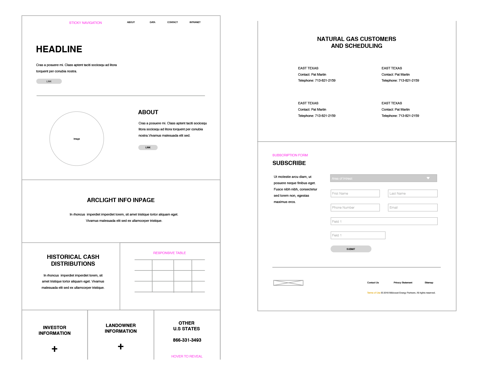
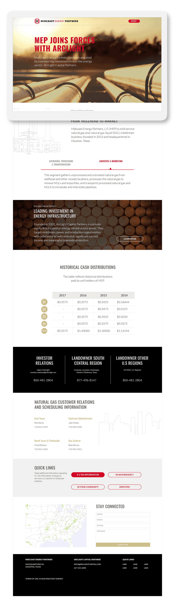

Midcoast Energy · Brand & Digital Design
Overview
A microsite built to boost awareness and guide stakeholders through a brand evolution — all while keeping the design clear and intuitive. The goal was to balance continuity and growth in one seamless experience.
Stakeholders needed to see the brand they already trusted — not a replacement, a progression. Every design decision had to feel earned, not imposed.
Complex organizational change needed to read simply. The experience had to guide users through a transformation story without making them work for it.

Approach
When it comes to digital design, it all starts with information architecture. Building a solid framework before diving into the visual execution is non-negotiable. After testing several iterations, infinite scroll emerged as the right pattern — its smooth jump-to links make it easy to move between sections, and users glide through content without hitting roadblocks.
With a fluid layout, clear content flow, and intuitive interaction patterns, users never have to second-guess their next move. Every section was defined so that as they scrolled, they effortlessly absorbed updates and key information in the right order.
Content hierarchy mapped before any visual decisions, ensuring each section served a clear purpose in the transformation story.
Jump-to navigation anchors let stakeholders move freely while maintaining orientation throughout the experience.
Fluid layout and consistent interaction patterns kept users moving through the content without confusion or dead ends.
Solution
The brief was clear: create a design that feels forward-thinking, progressive, and dynamic. Photography with depth of field drew users in and set the tone for the site’s vision. Illustrations were minimal and clean — just enough to support the message without overpowering it.
Every navigational touchpoint was chosen to reveal a transformational milestone as users moved through the site. The result was an experience where the act of scrolling itself felt like participating in the brand’s evolution — not just reading about it.

Outcomes
Complex brand evolution communicated clearly — stakeholders could follow the transformation story without friction.
Infinite scroll with jump-to anchors gave users full control over how they moved through the content.
Photography and minimal illustration worked as a system — depth and clarity in the same frame.
The design felt like a progression, not a replacement — trust in the existing brand carried forward into the new direction.